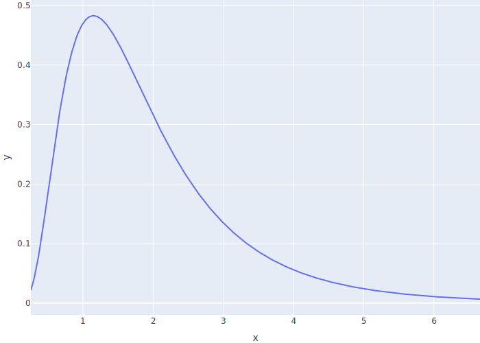

Discrete Event Simulation
Our First Simulation
- Create a SimPy
Environment - Create one or more generators for it to run
- These will almost always need the environment
- Pass each generator to
env.process(…) - Call
env.run(…)and specify simulation duration
from simpy import Environment
T_SIM = 30
T_WAIT = 8
def coder(env):
while True:
print(f"{env.now}: Is there any work?")
yield env.timeout(T_WAIT)
if __name__ == "__main__":
env = Environment()
env.process(coder(env))
env.run(until=T_SIM)
- Output
0: Is there any work?
8: Is there any work?
16: Is there any work?
24: Is there any work?
Interaction
- Manager creates jobs and puts them in a queue
- Jobs arrive at regular intervals
- Each job has a duration
- Give each job an ID for tracking
- Coder takes jobs from the queue in order and does them
- Queue is implemented as a SimPy
Storewith.put()and.get()methods
- A process (generator) only gives control back to SimPy when it yields
- So processes must
yieldthe results ofqueue.put()andqueue.get()- Writing
job = queue.get()rather thanjob = yield queue.get()is a common mistake
- Writing
- Parameters
T_CREATE = 6
T_JOB = 8
T_SIM = 20
Jobclass
from itertools import count
class Job:
_next_id = count()
def __init__(self):
self.id = next(Job._next_id)
self.duration = T_JOB
def __str__(self):
return f"job-{self.id}"
managerprocess
def manager(env, queue):
while True:
job = Job()
print(f"manager creates {job} at {env.now}")
yield queue.put(job)
yield env.timeout(T_CREATE)
coderprocess
def coder(env, queue):
while True:
print(f"coder waits at {env.now}")
job = yield queue.get()
print(f"coder gets {job} at {env.now}")
yield env.timeout(job.duration)
print(f"code completes {job} at {env.now}")
- Set up and run
if __name__ == "__main__":
env = Environment()
queue = Store(env)
env.process(manager(env, queue))
env.process(coder(env, queue))
env.run(until=T_SIM)
- Output
manager creates job-0 at 0
coder waits at 0
coder gets job-0 at 0
manager creates job-1 at 6
code completes job-0 at 8
coder waits at 8
coder gets job-1 at 8
manager creates job-2 at 12
code completes job-1 at 16
coder waits at 16
coder gets job-2 at 16
manager creates job-3 at 18
- Easier to see as columns
manager creates job-0 at 0
manager creates job-1 at 6
manager creates job-2 at 12
manager creates job-3 at 18
coder waits at 0
coder gets job-0 at 0
coder waits at 8
coder gets job-1 at 8
coder waits at 16
coder gets job-2 at 16
- But even this is hard to read
Uniform Rates
- Use ranges for creation times and job durations
RNG_SEED = 98765
T_CREATE = (6, 10)
T_JOB = (8, 12)
T_SIM = 20
Jobhas a random duration
class Job:
def __init__(self):
self.id = next(Job._next_id)
self.duration = random.uniform(*T_JOB)
managerwaits a random time before creating the next job- Format time to two decimal places for readability
def manager(env, queue):
while True:
job = Job()
print(f"manager creates {job} at {env.now:.2f}")
yield queue.put(job)
yield env.timeout(random.uniform(*T_CREATE))
- Always initialize the random number generator to ensure reproducibility
- Hard to debug if the program behaves differently each time we run it
if __name__ == "__main__":
random.seed(RNG_SEED)
…as before…
manager creates job-0 at 0.00
manager creates job-1 at 8.36
manager creates job-2 at 14.73
coder waits at 0.00
coder gets job-0 at 0.00
coder waits at 8.52
coder gets job-1 at 8.52
Better Random Distributions
- Assume probability of manager generating a new job in any instant is fixed
- I.e., doesn't depend on how long since the last job was generated
- If the arrival rate (jobs per tick) is λ, the time until the next job is an exponential random variable with mean 1/λ

- Use a log-normal random variable to model job lengths
- All job lengths are positive
- Most jobs are short but there are a few outliers
- If parameters are μ and σ, the median is eμ

Better Random Interaction
- Parameters and randomization functions
…other parameters as before…
T_JOB_ARRIVAL = 2.0
T_JOB_MEAN = 0.5
T_JOB_STD = 0.6
def rand_job_arrival():
return random.expovariate(1.0 / T_JOB_ARRIVAL)
def rand_job_duration():
return random.lognormvariate(T_JOB_MEAN, T_JOB_STD)
- Corresponding changes to
Jobandmanager
class Job:
def __init__(self):
self.id = next(Job._next_id)
self.duration = rand_job_duration()
def manager(env, queue):
while True:
job = Job()
t_delay = rand_job_arrival()
print(f"manager creates {job} at {env.now:.2f} waits for {t_delay:.2f}")
yield queue.put(job)
yield env.timeout(t_delay)
- Results
manager creates job-0 at 0.00 waits for 7.96
manager creates job-1 at 7.96 waits for 0.60
manager creates job-2 at 8.56 waits for 3.70
coder waits at 0.00
coder gets job-0 at 0.00
coder waits at 0.65
coder gets job-1 at 7.96
coder waits at 8.75
coder gets job-2 at 8.75
- But this is still hard to read and analyze
Introduce Structure
- Requirements
- Save results as JSON to simplify analysis
- Simulation may have several pieces, so put them in one object
- Support parameter sweeping
- Store parameters in a dataclass
- Each parameter must have a default value so utilities can construct instances without knowing anything about specific parameters
- Use
@dataclass_jsondecorator so that utilities can serialize as JSON
@dataclass_json
@dataclass
class Params:
"""Simulation parameters."""
n_seed: int = 13579
t_sim: float = 30
t_wait: float = 8
- Define another class to store the entire simulation
- Derive from SimPy
Environment - Store simulation parameters as
.params - May have other structures (e.g., a log to record output)
- Give it a
.result()method that returns simulation result (e.g., the log)
- Derive from SimPy
class Simulation(Environment):
"""Complete simulation."""
def __init__(self):
super().__init__()
self.params = Params()
self.log = []
def result(self):
return {"log": self.log}
- All of the simulation process generator functions take an instance of the simulation class as an argument
sim.whateverfor elements of the SimPyEnvironmentsim.params.whateverfor parameters
def coder(sim):
"""Simulate a single coder."""
while True:
sim.log.append(f"{sim.now}: Is there any work?")
yield sim.timeout(sim.params.t_wait)
- Define a
Simulation.simulatemethod that creates processes and runs the simulation- Can't call it
runbecause we need that method from the parent classEnvironment
- Can't call it
class Simulation
def simulate(self):
self.process(coder(self))
self.run(until=self.params.t_sim)
- Use
util.run(…)to run scenarios with varying parameters and get result as JSON- Look in project's
utilitiesdirectory for implementation
- Look in project's
if __name__ == "__main__":
args, results = util.run(Params, Simulation)
if args.json:
json.dump(results, sys.stdout, indent=2)
else:
results = util.as_frames(results)
for key, frame in results.items():
print(f"## {key}")
print(frame)
- Sample command line invocation
python introduce_structure.py --json t_wait=12,20 t_sim=20,30
- Output
{
"results": [
{
"params": {"n_seed": 13579, "t_sim": 20, "t_wait": 12},
"log": [
{"time": 0, "message": "loop 0"},
{"time": 12, "message": "loop 1"}
]
},
{
"params": {"n_seed": 13579, "t_sim": 30, "t_wait": 12},
"log": [
{"time": 0, "message": "loop 0"},
{"time": 12, "message": "loop 1"},
{"time": 24, "message": "loop 2"}
]
},
{
"params": {"n_seed": 13579, "t_sim": 20, "t_wait": 20},
"log": [
{"time": 0, "message": "loop 0"}
]
},
{
"params": {"n_seed": 13579, "t_sim": 30, "t_wait": 20},
"log": [
{"time": 0, "message": "loop 0"},
{"time": 20, "message": "loop 1"}
]
}
]
}
- Convert to Polars dataframes)
- Include all parameters in each dataframe to simplify later analysis
python introduce_structure.py --tables t_wait=12,20 t_sim=20,30
## log
shape: (8, 5)
## log
shape: (8, 6)
┌──────┬─────────┬─────┬────────┬───────┬────────┐
│ time ┆ message ┆ id ┆ n_seed ┆ t_sim ┆ t_wait │
│ --- ┆ --- ┆ --- ┆ --- ┆ --- ┆ --- │
│ i64 ┆ str ┆ i32 ┆ i32 ┆ i32 ┆ i32 │
╞══════╪═════════╪═════╪════════╪═══════╪════════╡
│ 0 ┆ loop 0 ┆ 0 ┆ 13579 ┆ 20 ┆ 12 │
│ 12 ┆ loop 1 ┆ 0 ┆ 13579 ┆ 20 ┆ 12 │
│ 0 ┆ loop 0 ┆ 1 ┆ 13579 ┆ 30 ┆ 12 │
│ 12 ┆ loop 1 ┆ 1 ┆ 13579 ┆ 30 ┆ 12 │
│ 24 ┆ loop 2 ┆ 1 ┆ 13579 ┆ 30 ┆ 12 │
│ 0 ┆ loop 0 ┆ 2 ┆ 13579 ┆ 20 ┆ 20 │
│ 0 ┆ loop 0 ┆ 3 ┆ 13579 ┆ 30 ┆ 20 │
│ 20 ┆ loop 1 ┆ 3 ┆ 13579 ┆ 30 ┆ 20 │
└──────┴─────────┴─────┴────────┴───────┴────────┘